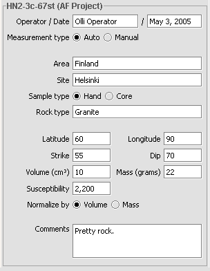

Project information

| Operator: | Name of the operator. |
|---|---|
| Date: | Date, automatically generated but can be changed. |
| Measurement type: | Radiobuttons for Auto or Manual. Selecting Auto or manual radiobutton doesn't affect operation of the program, these are only for convenience of user. |
| Area: | Area of the sample. |
| Site: | Site inside of area. |
| Sample type: | Sample's type, either hand or core. |
| Rock type: | Rock type of the sample. |
| Latitude: | Sample's latitude. |
| Longitude: | Sample's longitude. |
| Strike: | Strike of the sample. |
| Dip: | Dip of the sample. |
| Volume: | Sample's volume. |
| Mass: | Sample's mass. |
| Susceptibility: | Susceptibility of sample. |
| Normalized by: | Tells program wheter to use volume or mass when normalizing sample. |
| Comments: | Free formed comments of sample. |